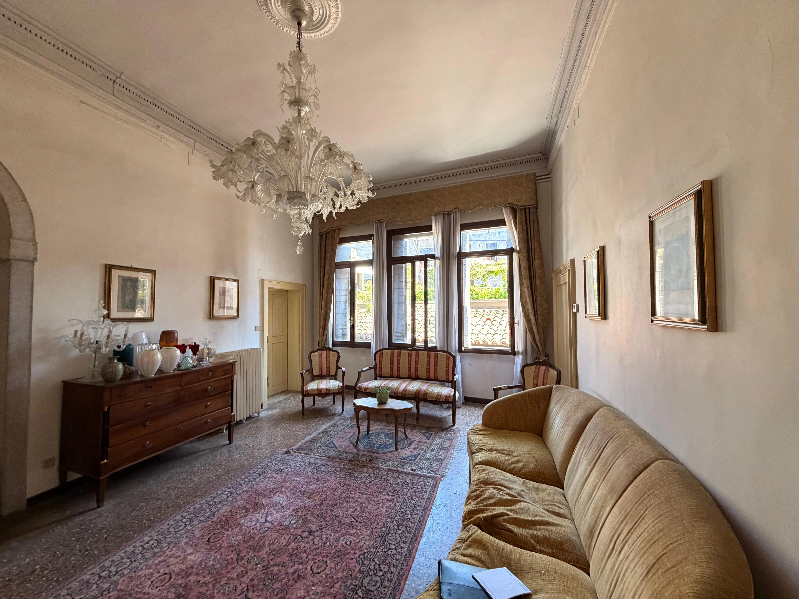
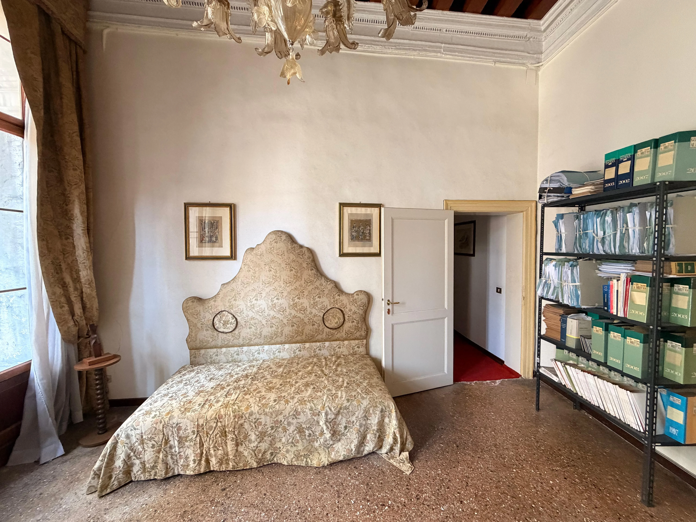
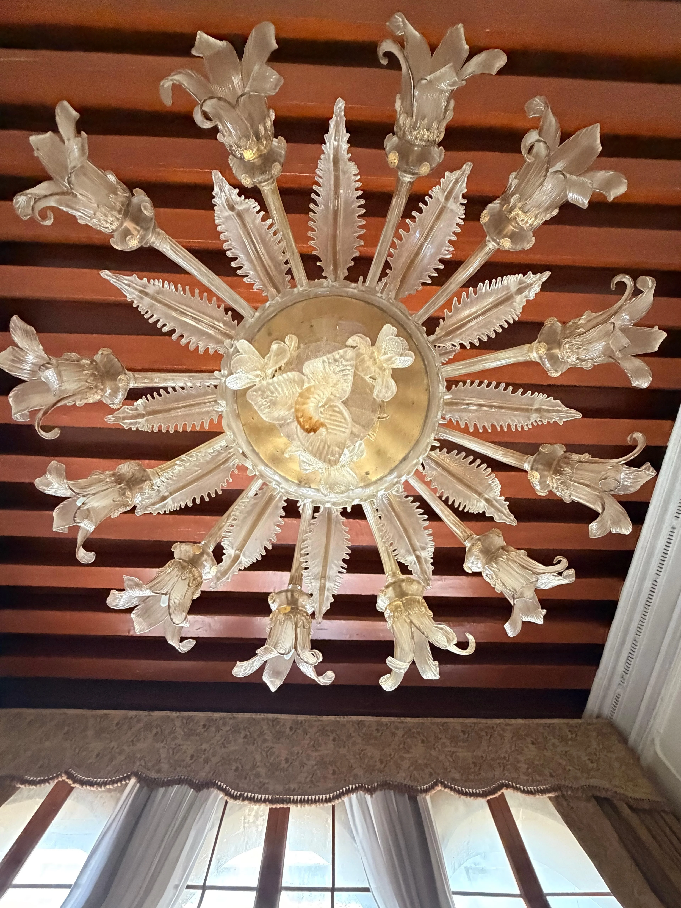
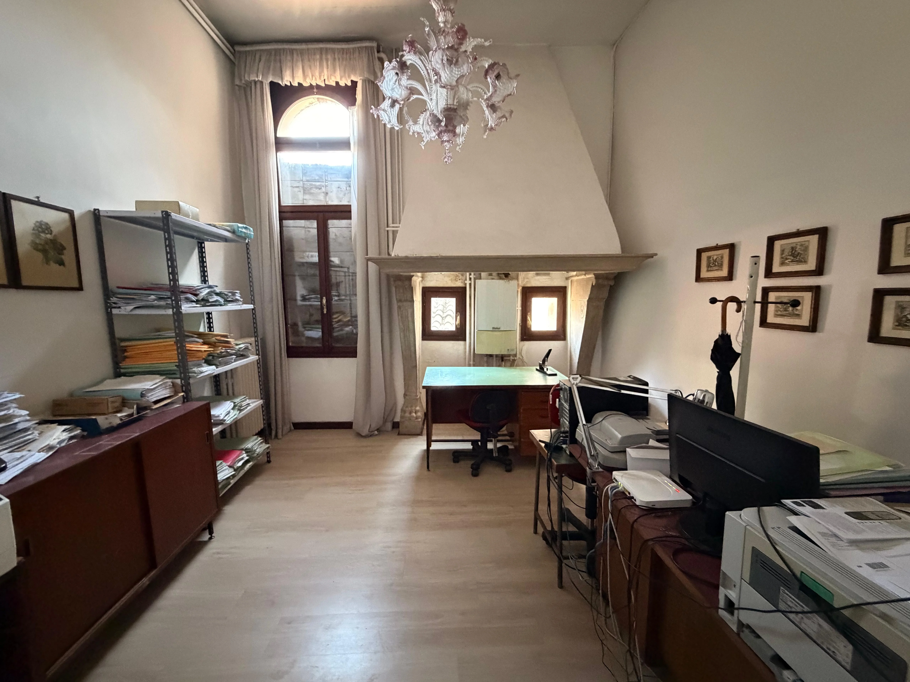
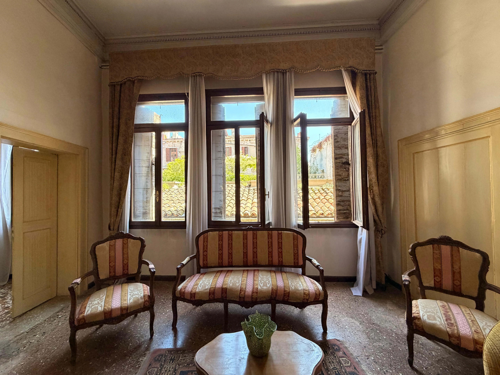
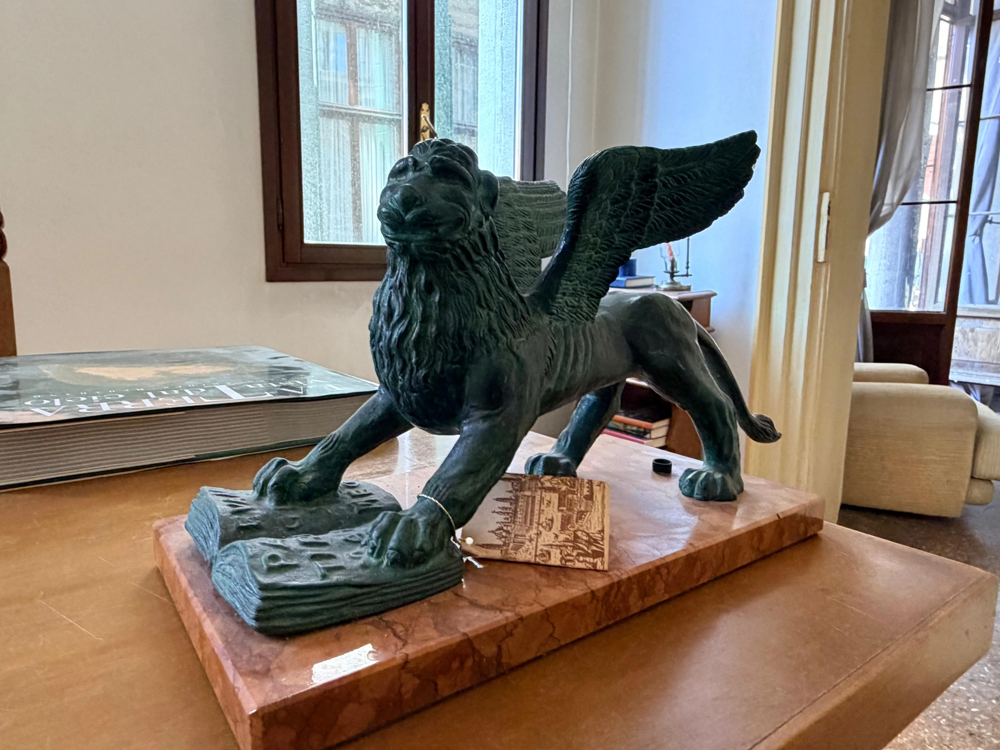
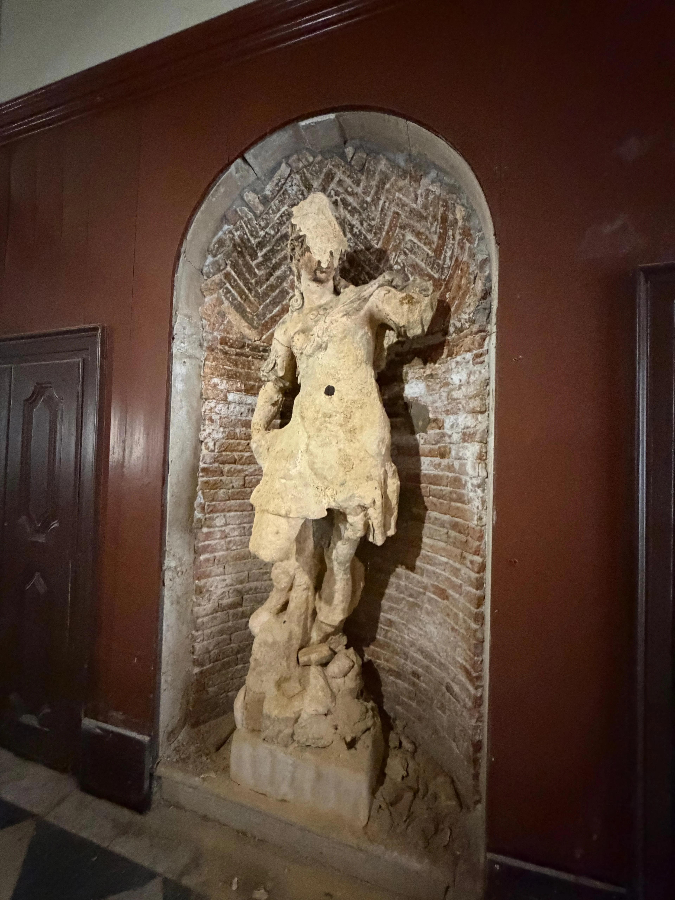
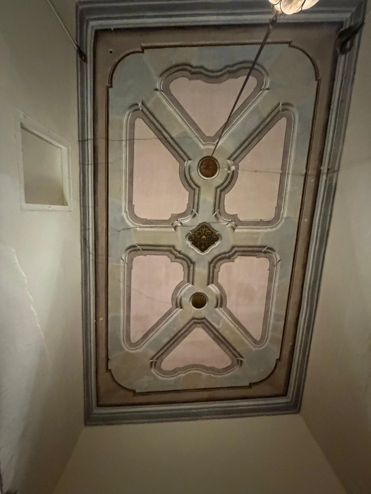

212 m²
SuperficieFloor Area
3 Piani3 Floors
Terra, 1° e 2°G, 1st & 2nd
Riva PrivataPrivate Dock
Accesso AcquaWater Access
Canal Grande
VistaView
Situata nel cuore del Sestiere di San Marco, a pochi passi dall'elegante Campo Sant'Angelo, questa proprietà di 212 mq accoglie i suoi ospiti con una solennità d'altri tempi. L'ingresso indipendente è impreziosito da una maestosa statua d'epoca, un dettaglio architettonico che conferisce immediato prestigio e carattere alla dimora, richiamando i fasti della nobiltà veneziana. Situated in the heart of the San Marco sestiere, steps from the elegant Campo Sant'Angelo, this 212 sqm property welcomes its guests with a timeless solemnity. The independent entrance is adorned by a majestic period statue — an architectural detail that lends immediate prestige and character to the residence, evoking the splendour of the Venetian nobility.
A differenza di molte proprietà nel centro storico, questa dimora vanta una tripla esposizione essendo libera su due lati. Questa caratteristica, unita alle ampie aperture, rende l'immobile eccezionalmente luminoso in ogni momento della giornata, creando un'atmosfera ariosa e accogliente in tutti i suoi ambienti distribuiti sui piani Terra, Primo e Secondo. Unlike many properties in the historic centre, this residence enjoys a triple aspect, being free-standing on two sides. This feature, combined with the generous window openings, makes the property exceptionally bright at every hour of the day, creating an airy and welcoming atmosphere throughout the spaces spread across the Ground, First and Second floors.
Il legame con l'elemento liquido è totale: la proprietà dispone di una riva d'acqua privata, permettendo un accesso diretto e riservato tramite taxi acqueo o imbarcazione propria. Dai piani superiori, un grazioso balcone si affaccia sul canale, regalando uno scorcio suggestivo che si apre fino alla maestosità del Canal Grande. The connection with the water is absolute: the property has a private water frontage, allowing direct and exclusive access by water taxi or private boat. From the upper floors, a graceful balcony overlooks the canal, offering an evocative view that opens all the way to the grandeur of the Canal Grande.
Attualmente adibito a ufficio ma con la possibilità concreta di cambio di destinazione d'uso in residenziale, l'immobile rappresenta una «tela bianca» per un restauro d'eccellenza. La struttura si presta alla creazione di una residenza di ultra lusso dove la luce, l'indipendenza e il fascino storico convivono in perfetta armonia. Currently used as office space but with a concrete possibility of conversion to residential use, the property represents a blank canvas for an exceptional restoration. The structure lends itself to the creation of an ultra-luxury residence where light, independence and historic charm coexist in perfect harmony.







